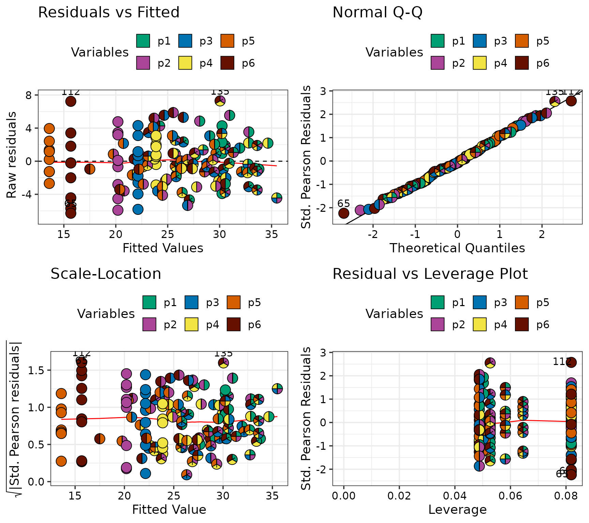
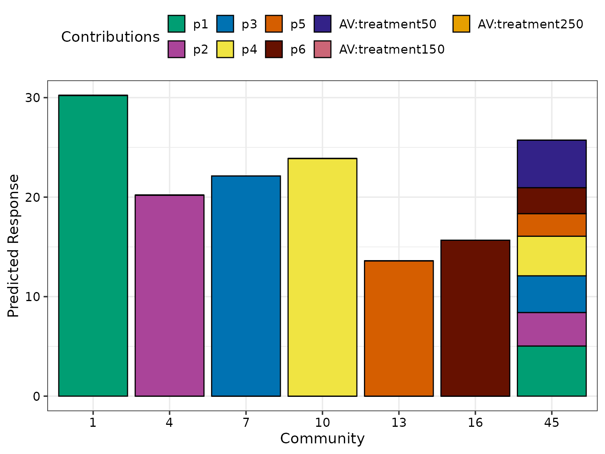
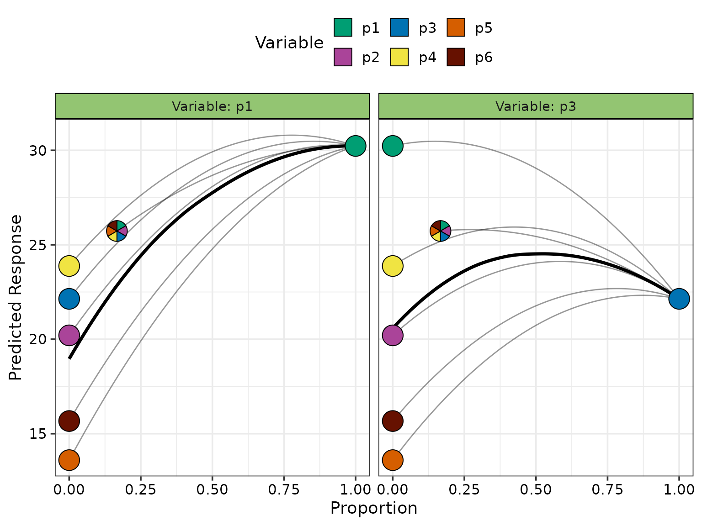
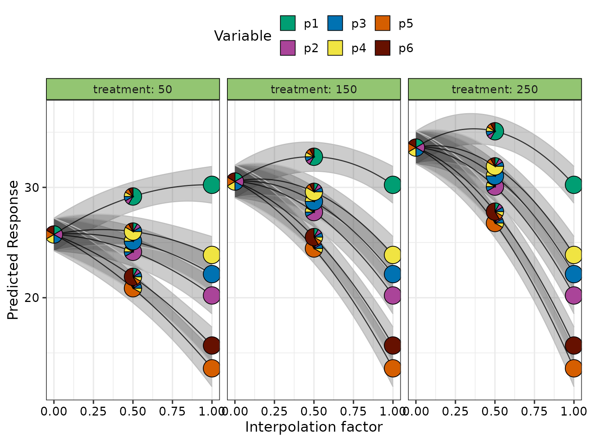
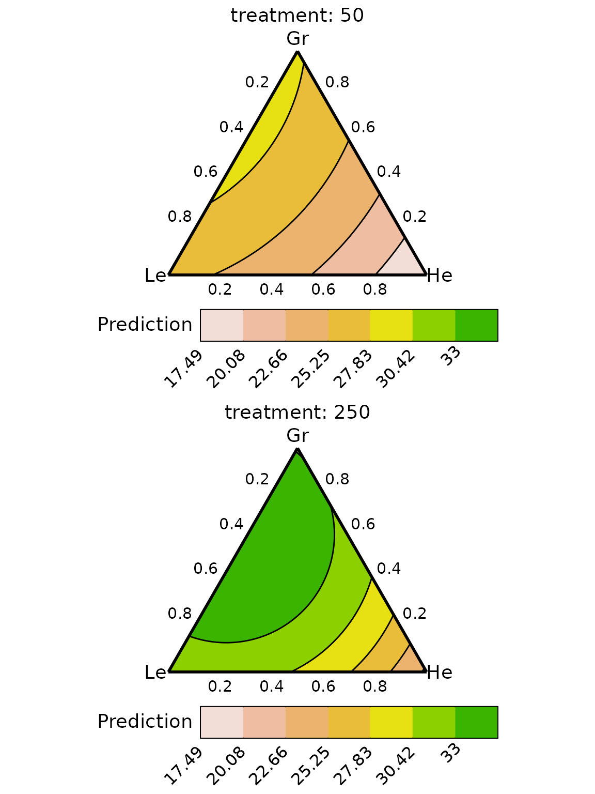

Using DImodelsVis with regression models not fit using the DImodels package
DImodelsVis-with-complex-models.RmdThe DImodelsVis is very convenient to use with
regression models fit using the DImodels
R package. However, sometimes users could have more complicated models
which couldn’t be fit using DImodels
or they would prefer to have more flexibility and control in customising
the plot or the underlying data.
For these situations, each plotting function has a corresponding data preparation and plotting function. The data preparation functions have an _data suffix while the plotting functions have an _plot suffix. This document describes how to use the data preparation functions to construct (and customise) the underlying data, which can then be passed to the plotting function for visualising the results.
Load libraries
library(DImodelsVis)
library(DImodels)
library(dplyr)Load data
We use the sim4 data from the DImodels
R package. This is a simulated dataset to represent typical data arising
from a grassland experiment. We have several communities with one up to
six species (p1-p6) sown at varying
proportions. There is a treatment covariate representing
the fertilisation level (in kg/ha/yr) applied in each community.
Further, it is assumed that the species can be grouped based on the
function they perform in the community, thus p1 and
p2 are assumed to be grasses, with p3 and
p4 being legumes, and p5 and p6
being herbs. The response variable is assumed to be annual
aboveground dry-matter yield.
Fitting the model
We take a subset of the data with communities receiving 50 and 150 kg
fertiliser and fit an lm model to this data where we model
the response as a linear combination of the species proportions, the
average interaction term (AV; see ?DI_data_E_AV for more
interaction) and the fertiliser treatment. We also add an interaction
between the average interaction term and fertiliser treatment, assuming
that the amount of fertiliser in a plot affects the way species
interact.
species <- c("p1", "p2", "p3", "p4", "p5", "p6")
FG <- c("Gr", "Gr", "Le", "Le", "He", "He")
model_data <- sim4 %>%
mutate(AV = DI_data_E_AV(prop = species, data = .)$AV,
treatment = as.factor(treatment))
mod <- lm(response ~ 0 + p1 + p2 + p3 + p4 + p5 + p6 + (AV):treatment,
data = model_data)The model coefficients are as follows. Note: We have dropped the intercept from this model due to the compositional nature of the variables in the model.
summary(mod)
#>
#> Call:
#> lm(formula = response ~ 0 + p1 + p2 + p3 + p4 + p5 + p6 + (AV):treatment,
#> data = model_data)
#>
#> Residuals:
#> Min 1Q Median 3Q Max
#> -6.292 -2.005 -0.220 1.901 7.286
#>
#> Coefficients:
#> Estimate Std. Error t value Pr(>|t|)
#> p1 30.2319 0.8397 36.003 < 2e-16 ***
#> p2 20.2040 0.8397 24.061 < 2e-16 ***
#> p3 22.1378 0.8397 26.364 < 2e-16 ***
#> p4 23.8764 0.8397 28.435 < 2e-16 ***
#> p5 13.5990 0.8397 16.195 < 2e-16 ***
#> p6 15.6690 0.8397 18.660 < 2e-16 ***
#> AV:treatment50 11.4637 2.1505 5.331 4.11e-07 ***
#> AV:treatment150 22.9882 2.1505 10.690 < 2e-16 ***
#> AV:treatment250 30.3752 2.1505 14.125 < 2e-16 ***
#> ---
#> Signif. codes: 0 '***' 0.001 '**' 0.01 '*' 0.05 '.' 0.1 ' ' 1
#>
#> Residual standard error: 2.934 on 132 degrees of freedom
#> Multiple R-squared: 0.9879, Adjusted R-squared: 0.987
#> F-statistic: 1193 on 9 and 132 DF, p-value: < 2.2e-16We proceed with this model and create visualisations for interpreting the results.
Model diagnostics plot
We first use the model_diagnostics function to check if
all the underlying model assumptions are satisfied.
The only difference here is that in addition to the model object we
also need to specify the prop parameter describing the name
of the compositional variables in the model where species
is a previously defined vector naming the six columns in the datast that
contain the species proportions.
# Create model diagnostics plot with pie-glyphs showing species proportions
model_diagnostics(model = mod, prop = species)
#> ✔ Created all plots.
These plots indicate that model assumptions aren’t violated.
Overlaying with pie-glyphs has the additional benefit that we can
quickly identify the communities with unusual values. For example, the
monocultures (communities with only one species) have a very high
leverage value as seen in the Residuals vs Leverage
plot.
Prediction contributions plot
We manually call the prediction_contributions_data
function to prepare the data for visualising the contributions of the
various terms in the regression model to the predicted response.
We use a subset of the original data consisting of the six monocultures and the equi-proportional community at the 50 kg fertilisation treatment.
Note: It is important for the specified data to have
all the variables in the model. An error will be thrown if any variable
is missing.
subset_data <- model_data[c(1, 4, 7, 10, 13, 16, 45), ]
print(subset_data)
#> richness treatment p1 p2 p3 p4 p5
#> 1 1 50 1.0000000 0.0000000 0.0000000 0.0000000 0.0000000
#> 4 1 50 0.0000000 1.0000000 0.0000000 0.0000000 0.0000000
#> 7 1 50 0.0000000 0.0000000 1.0000000 0.0000000 0.0000000
#> 10 1 50 0.0000000 0.0000000 0.0000000 1.0000000 0.0000000
#> 13 1 50 0.0000000 0.0000000 0.0000000 0.0000000 1.0000000
#> 16 1 50 0.0000000 0.0000000 0.0000000 0.0000000 0.0000000
#> 45 6 50 0.1666667 0.1666667 0.1666667 0.1666667 0.1666667
#> p6 response AV
#> 1 0.0000000 26.325 0.0000000
#> 4 0.0000000 17.391 0.0000000
#> 7 0.0000000 16.317 0.0000000
#> 10 0.0000000 25.768 0.0000000
#> 13 0.0000000 12.330 0.0000000
#> 16 1.0000000 9.965 0.0000000
#> 45 0.1666667 25.118 0.4166667
plot_data <- prediction_contributions_data(data = subset_data,
model = mod)
#> ✔ Finished data preparation.
plot_data
#> # A tibble: 49 × 10
#> .Community richness treatment response AV .Pred .Lower .Upper
#> <fct> <int> <fct> <dbl> <dbl> <dbl> <dbl> <dbl>
#> 1 1 1 50 26.3 0 30.2 28.6 31.9
#> 2 1 1 50 26.3 0 30.2 28.6 31.9
#> 3 1 1 50 26.3 0 30.2 28.6 31.9
#> 4 1 1 50 26.3 0 30.2 28.6 31.9
#> 5 1 1 50 26.3 0 30.2 28.6 31.9
#> 6 1 1 50 26.3 0 30.2 28.6 31.9
#> 7 1 1 50 26.3 0 30.2 28.6 31.9
#> 8 4 1 50 17.4 0 20.2 18.5 21.9
#> 9 4 1 50 17.4 0 20.2 18.5 21.9
#> 10 4 1 50 17.4 0 20.2 18.5 21.9
#> # ℹ 39 more rows
#> # ℹ 2 more variables: .Contributions <chr>, .Value <dbl>subset_data is expanded to include the model predictions
(.Pred) along with the associated uncertainty
(.Lower and .Upper). We also have a column
labelled .Contributions identifying the names of all
variables in the model along their values in .Value.
A benefit of using the data preparation functions is that, it’s also possible to create the data using model coefficients. This is particularly useful for cases when your statistical model is fit using a different software (SAS, SPSS, etc.) and it’s difficult to fit the same model in R. We could simply import the coefficients from the external model and use those to create our visualisations.
coeffs <- c("p1" = 30.23, "p2" = 20.20, "p3" = 22.13,
"p4" = 23.88, "p5" = 13.60, "p6" = 15.67,
"AV:treatment50" = 11.46,
"AV:treatment150" = 22.99,
"AV:treatment250" = 30.37)
# One could also export the variance-covariance matrix from another
# software as a .csv file and read it here using the read.csv() function
vcov_mat <- vcov(mod)
print(coeffs)
#> p1 p2 p3 p4 p5
#> 30.23 20.20 22.13 23.88 13.60
#> p6 AV:treatment50 AV:treatment150 AV:treatment250
#> 15.67 11.46 22.99 30.37
# Note when using model-coefficients, the data should be in the same order
# as the model coefficients
# We can use the model.matrix function to prepare our subset data in the necessary format
coeff_data <- model.matrix(~ 0 + p1 + p2 + p3 + p4 + p5 + p6 + AV:treatment,
data = subset_data) %>%
as.data.frame()
print(coeff_data)
#> p1 p2 p3 p4 p5 p6 AV:treatment50
#> 1 1.0000000 0.0000000 0.0000000 0.0000000 0.0000000 0.0000000 0.0000000
#> 4 0.0000000 1.0000000 0.0000000 0.0000000 0.0000000 0.0000000 0.0000000
#> 7 0.0000000 0.0000000 1.0000000 0.0000000 0.0000000 0.0000000 0.0000000
#> 10 0.0000000 0.0000000 0.0000000 1.0000000 0.0000000 0.0000000 0.0000000
#> 13 0.0000000 0.0000000 0.0000000 0.0000000 1.0000000 0.0000000 0.0000000
#> 16 0.0000000 0.0000000 0.0000000 0.0000000 0.0000000 1.0000000 0.0000000
#> 45 0.1666667 0.1666667 0.1666667 0.1666667 0.1666667 0.1666667 0.4166667
#> AV:treatment150 AV:treatment250
#> 1 0 0
#> 4 0 0
#> 7 0 0
#> 10 0 0
#> 13 0 0
#> 16 0 0
#> 45 0 0
# Notice how the column names of the coefficients and coeff_data match exactly
# Use coefficients and vcov parameter to specify the coefficients and
# variance-covariance matrix respectively.
# Note: specifing a vcov matrix is necessary only if the user want the
# uncertainty associated with the prediction
plot_data <- prediction_contributions_data(data = coeff_data,
coefficients = coeffs,
vcov = vcov_mat)
#> ✔ Finished data preparation.
head(plot_data)
#> # A tibble: 6 × 6
#> .Community .Pred .Lower .Upper .Contributions .Value
#> <fct> <dbl> <dbl> <dbl> <chr> <dbl>
#> 1 1 30.2 28.6 31.9 p1 30.2
#> 2 1 30.2 28.6 31.9 p2 0
#> 3 1 30.2 28.6 31.9 p3 0
#> 4 1 30.2 28.6 31.9 p4 0
#> 5 1 30.2 28.6 31.9 p5 0
#> 6 1 30.2 28.6 31.9 p6 0This data can then be passed to the
prediction_contributions_plot function to visualise the
results.
prediction_contributions_plot(data = plot_data)
#> ✔ Created plot.
The predicted response is highest for the p1
monoculture. The centroid community also has a high prediction with the
highest contribution coming from p1 and the average
interaction term.
Average change over diversity gradient
We can use the gradient_change_data function to prepare
data for visualising the average change in the predicted response over a
diversity gradient. The resultant data would have the
.Richness and .Evenness gradient values,
.Gradient would have the name of the gradient chosen the
calculate the average, .Pred has the predicted response
while .Avg would have the average predicted response at
each level of chosen diversity gradient.
Note: The calculated average is the mean of the communities specified in the data and not the average of all possible communities.
plot_data <- gradient_change_data(data = model_data, prop = species,
model = mod)
#> ✔ Finished data preparation
head(plot_data)
#> # A tibble: 6 × 15
#> richness treatment p1 p2 p3 p4 p5 p6 response AV
#> <int> <fct> <dbl> <dbl> <dbl> <dbl> <dbl> <dbl> <dbl> <dbl>
#> 1 1 50 1 0 0 0 0 0 26.3 0
#> 2 1 50 1 0 0 0 0 0 29.1 0
#> 3 1 50 1 0 0 0 0 0 27.6 0
#> 4 1 50 0 1 0 0 0 0 17.4 0
#> 5 1 50 0 1 0 0 0 0 15.7 0
#> 6 1 50 0 1 0 0 0 0 14.3 0
#> # ℹ 5 more variables: .Richness <dbl>, .Evenness <dbl>, .Gradient <chr>,
#> # .Pred <dbl>, .Avg <dbl>The output data can be passed to gradient_change_plot to
visualise the results. We use the facet_var parameter and
specify "treatment" to create a separate panel for each
treatment.
gradient_change_plot(data = plot_data,
facet_var = "treatment")
#> ✔ Created plot.As the richness increases, the predicted response increases but at a saturating rate. The average predicted response also increases as we increase the rate of fertilisation.
Effects plot for compositional data
The visualise_effect_data function can be used to create
the data showing the change in the response as we increase/decrease the
proportion of one of the variables in the data. Due to the compositional
nature of the variables, changing the proportion of any one affects the
proportion of all other variables. The function handles this by ensuring
that as the proportion of any variable changes, all remaining variables
are adjusted to ensure their relative proportion always stays
constant.
We use the subset_data from before containing the six
monocultures and six-species centroid community and see the effect of
increasing the proportion of the species p1 and
p3 (specified using var_interest) in these
communities.
Note: Since the species interaction term depends on the
proportions of the species, we use prediction = FALSE to
create the template of species proportion first and then add the
interaction structure.
Further, we manually call the add_prediction function to
add the predictions to the resultant data.
plot_data <- visualise_effects_data(data = subset_data, prop = species,
var_interest = c("p1", "p3"),
effect = "increase",
prediction = FALSE)
#> ✔ Finished data preparation.
plot_data <- plot_data %>% mutate(AV = DI_data_E_AV(data = .,
prop = species)$AV)
plot_data <- add_prediction(plot_data, model = mod, interval = "confidence")The data is expanded to include the following columns
-
.Sp: The variable of interest who’s proportion is changed. -
.Proportion: The proportion of the variable of interest in a community. -
.Group: An identifier for creating theeffectscurve. -
.Effect: A string describing whether the proportion of the variable of interest is increased or decreased. -
.Pred: The predicted response for a community. -
.Lower: The lower interval (at \(% confidence level = 0.95\) level) for the predicted response. -
.Upper: The upper interval (at \(% confidence level = 0.95\) level) for the predicted response.
Passing this data to visualise_effects_plot function
results in the following plot.
visualise_effects_plot(data = plot_data)
#> ✔ Created plot.
Increasing the proportion of p1 always results in an
increase in the predicted response while increasing the proportion of
p3 could increase or decrease the predicted response
depending on the proportion of the other species in the community.
Change in response across the simplex space
This function is a more general version of effects plots and helps to visualise the change in the response as we move in a straight line between two points across the simplex space. Mathematically, this is equivalent to changing the proportion of multiple compositional variables whilst keeping the ratio of the remaining variables constant.
To use simplex_path_data we should specify a data-frame
consisting of starting and ending communities. In this example, we
specify the six-species centroid mixture as our starting community and
see the change in the response as we move towards the monoculture of
each of the six species across all three fertiliser treatments.
Note: Just like effect_plot_data, we use
prediction = FALSE to create the template of species
proportion first and then add the interaction structure, followed by a
call to the add_prediction function to add the predictions
to the resultant data.
The data is expanded to include the following columns *
.InterpConst: The interpolation constant between the start
and end points (will be between 0 and 1). * .Group: An
identifier for creating the effects curve. *
.Pred: The predicted response for a community. *
.Lower: The lower interval (at \(\alpha = 0.05\) level) for the predicted
response. * .Upper: The upper interval (at \(\alpha = 0.05\) level) for the predicted
response.
start_comm <- model_data %>% filter(richness == 6) %>%
distinct(treatment, .keep_all = TRUE) %>%
slice(rep(1:3, each = 6))
end_comm <- model_data %>% filter(richness == 1) %>%
distinct(p1, p2, p3, p4, p5, p6, treatment, .keep_all = TRUE)
plot_data <- simplex_path_data(starts = start_comm,
ends = end_comm,
prop = species,
prediction = FALSE)
#> ✔ Finished data preparation.
plot_data <- plot_data %>% mutate(AV = DI_data_E_AV(data = .,
prop = species)$AV)
plot_data <- add_prediction(plot_data, model = mod, interval = "confidence")
head(plot_data)
#> p1 p2 p3 p4 p5 p6 richness
#> 1 0.1666667 0.1666667 0.1666667 0.1666667 0.1666667 0.1666667 6
#> 2 0.1750000 0.1650000 0.1650000 0.1650000 0.1650000 0.1650000 6
#> 3 0.1833333 0.1633333 0.1633333 0.1633333 0.1633333 0.1633333 6
#> 4 0.1916667 0.1616667 0.1616667 0.1616667 0.1616667 0.1616667 6
#> 5 0.2000000 0.1600000 0.1600000 0.1600000 0.1600000 0.1600000 6
#> 6 0.2083333 0.1583333 0.1583333 0.1583333 0.1583333 0.1583333 6
#> treatment response AV .InterpConst .Group .Pred .Lower .Upper
#> 1 50 25.118 0.4166667 0.00 1 25.72958 24.25535 27.20380
#> 2 50 25.118 0.4166250 0.01 1 25.82189 24.34775 27.29602
#> 3 50 25.118 0.4165000 0.02 1 25.91324 24.43936 27.38712
#> 4 50 25.118 0.4162917 0.03 1 26.00364 24.53020 27.47709
#> 5 50 25.118 0.4160000 0.04 1 26.09309 24.62025 27.56593
#> 6 50 25.118 0.4156250 0.05 1 26.18158 24.70952 27.65364This data is passed to the simplex_path_plot function to
create the data for creating the plot. We use facet_var to
show a separate panel for each treatment and also show the uncertainty
around the prediction using se = TRUE.
simplex_path_plot(data = plot_data, se = TRUE,
facet_var = "treatment")
#> ✔ Created plot.
At "50" kg and "150" kg of fertiliser
treatment, increasing the proportion of p1 results in a
higher predicted response, while increasing the proportion of other
species decreases the predicted response. At "250" kg of
fertilisation all monocultures perform worse than the centroid community
and thus increasing their proportion decreases the response.
Conditional ternary plot
We fix n-3 variables to have a constant value \(p_1, p_2, p_3, ..., p_{n-3}\) such that
\(P = p_1 + p_2 + p_3 + ... p_{n - 3}\)
and \(0 \leq P \leq 1\) and vary the
proportion of the remaining three variables between \(0\) and \(1-P\) to visualise the change in the
predicted response as a contour map within a ternary diagram.
In this example we create two ternary diagrams showing the effect of
changing the proportion of species p1, p5 and
p6; One where p2 = 0 and p3 = 0.3
and second with p2 = 0.2 and p3 = 0.3. Any
compositional variables not specified would be assumed to be 0 (thus
p4 = 0 in both diagrams).
We also use the add_var parameter to specify that the
treatment value should be "50" and "250" for
the plots. This could ignored and we could add the treatment value after
creating the template, but the benefit of using add_var is
that it adds an identifier to the data which is used to automatically
create a separate panel for each value of treatment.
Since the interaction term is dependent on the species proportions,
we use prediction = FALSE to create the template of
proportions first, then add the interaction term. Finally, the
add_prediction function is called to add the predictions to
the data.
plot_data <- conditional_ternary_data(prop = species,
tern_vars = c("p1", "p5", "p6"),
add_var = list("treatment" = c("50", "250")),
conditional = data.frame("p2" = c(0, 0.3),
"p3" = c(0.2, 0.3)),
prediction = FALSE)
#> ✔ Finished data preparation.
plot_data <- plot_data %>% mutate(AV = DI_data_E_AV(data = .,
prop = species)$AV)
plot_data <- add_prediction(plot_data, model = mod)
head(plot_data)
#> p1 p5 p6 .x .y p2 p3 treatment .add_str_ID p4
#> 1 0 0.8000000 0.000000000 0.000000000 0 0 0.2 50 treatment: 50 0
#> 2 0 0.7986644 0.001335559 0.001669449 0 0 0.2 50 treatment: 50 0
#> 3 0 0.7973289 0.002671119 0.003338898 0 0 0.2 50 treatment: 50 0
#> 4 0 0.7959933 0.004006678 0.005008347 0 0 0.2 50 treatment: 50 0
#> 5 0 0.7946578 0.005342237 0.006677796 0 0 0.2 50 treatment: 50 0
#> 6 0 0.7933222 0.006677796 0.008347245 0 0 0.2 50 treatment: 50 0
#> .Sp .Value .Facet AV .Pred
#> 1 p2, p3 0, 0.2 p2 = 0; p3 = 0.2 0.1600000 17.14093
#> 2 p2, p3 0, 0.2 p2 = 0; p3 = 0.2 0.1610667 17.15593
#> 3 p2, p3 0, 0.2 p2 = 0; p3 = 0.2 0.1621298 17.17088
#> 4 p2, p3 0, 0.2 p2 = 0; p3 = 0.2 0.1631893 17.18579
#> 5 p2, p3 0, 0.2 p2 = 0; p3 = 0.2 0.1642453 17.20066
#> 6 p2, p3 0, 0.2 p2 = 0; p3 = 0.2 0.1652976 17.21549We pass this data to the conditional_ternary_plot
function to create the plot. We specify nrow = 2 to arrange
the plots for the two treatments in two rows.
conditional_ternary_plot(data = plot_data, nrow = 2)
#> ✔ Created all plots.
The predicted response is maximised as we increase the proportion of
p1 and a higher fertilisation results in higher predicted
response.
Grouped ternary plot
Sometimes, the compositional variables could be combined and grouped
to reduce the number of variables. In this data the species
p1 and p2 are assumed to be grasses,
p3 and p4 are legumes, and p5 and
p6 are herbs, thus we could combine these species to have
three (grasses, legumes and herbs) compositional variables instead of
six.
Using the grouped_ternary_data function we can visualise
the change in the response as we change the proportion of grasses,
legume, and herbs. The species are specified using the prop
argument, while the group each species belongs to is specified using
FG. There is a one-to-one mapping between prop
and FG, thus for example p1 and
p2 belong to the group "Gr". There is also
flexibility to adjust the proportion of the species within the
functional group as well using the values parameter. In
this example, each species within a group is 50% of the total group
proportion. All other parameters are same as
conditional_ternary_data. See
?grouped_ternary_data for more information.
plot_data <- grouped_ternary_data(prop = c("p1", "p2", "p3", "p4", "p5", "p6"),
FG = c("Gr", "Gr", "Le", "Le", "He", "He"),
values = c(0.5, 0.5, 0.5, 0.5, 0.5, 0.5),
add_var = list("treatment" = c("50","250")),
prediction = FALSE)
#> ✔ Finished data preparation.
plot_data <- plot_data %>% mutate(AV = DI_data_E_AV(data = .,
prop = species)$AV)
plot_data <- add_prediction(plot_data, model = mod)We pass this data to the grouped_ternary_plot function
to create the plot. We specify nrow = 2 to arrange the
plots for the two treatments in two rows.
grouped_ternary_plot(data = plot_data, nrow = 2)
#> ✔ Created all plots.
The figure shows that the predicted response is higher for the
"250" kg treatment across the entire simplex space and
within a given level of fertilisation the response is maximised by
increasing the proportion of grasses and legumes.